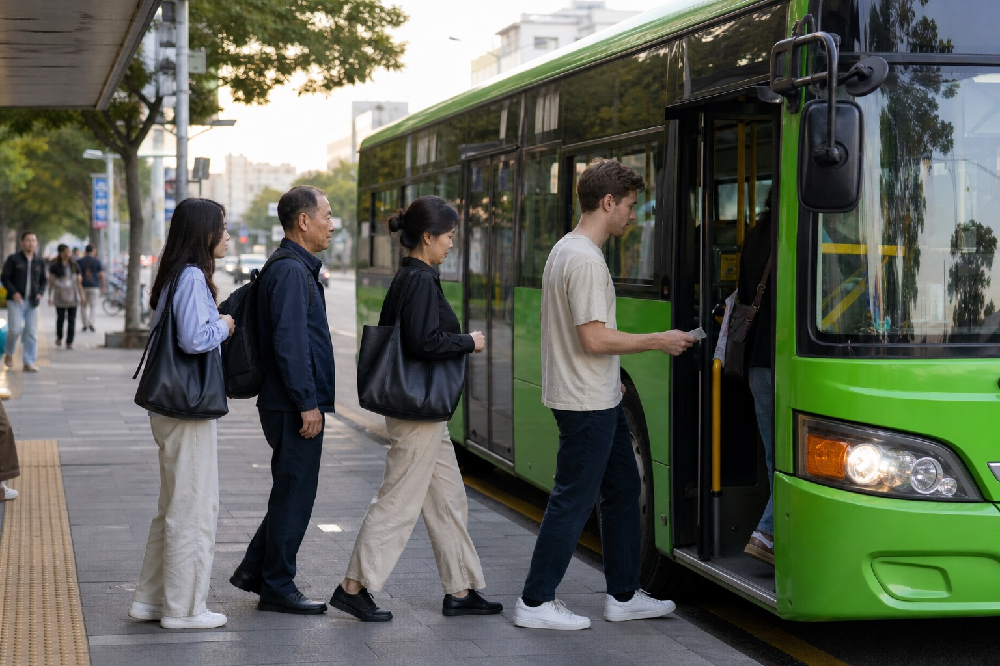
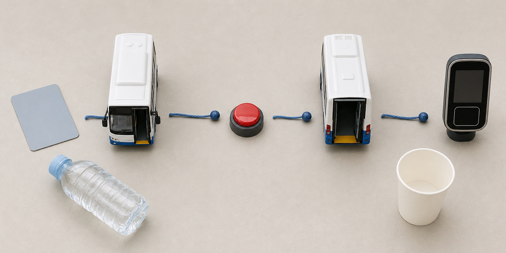

<style>
  .keg-post { color:#172033; font-family:Arial,Helvetica,sans-serif; font-size:17px; line-height:1.72; max-width:860px; margin:0 auto; }
  .keg-post * { box-sizing:border-box; }
  .keg-post h1 { margin:0 0 18px; font-size:34px; line-height:1.18; }
  .keg-post h2 { margin:40px 0 16px; padding-top:8px; border-top:1px solid #d9e3ea; font-size:26px; line-height:1.25; }
  .keg-post h3 { margin:24px 0 8px; font-size:20px; line-height:1.35; }
  .keg-post p { margin:0 0 18px; }
  .keg-post a { color:#2563eb; font-weight:700; text-decoration:none; border-bottom:1px solid rgba(37,99,235,.32); }
  .keg-post figure { margin:0 0 28px; overflow:hidden; border:1px solid #d9e3ea; border-radius:18px; background:#f8fbfd; }
  .keg-post figure img { display:block; width:100%; height:auto; }
  .keg-post figcaption { padding:10px 14px; color:#526173; font-size:14px; line-height:1.45; }
  .keg-post__lead { padding:20px 22px; border-left:5px solid #0f766e; border-radius:0 14px 14px 0; background:#eefaf7; font-size:18px; }
  .keg-post__note { padding:16px 18px; border:1px solid #f1d19a; border-radius:14px; background:#fff8e8; }
  .keg-post table { width:100%; margin:14px 0 26px; border-collapse:separate; border-spacing:0; border:1px solid #d9e3ea; border-radius:14px; overflow:hidden; }
  .keg-post th,.keg-post td { padding:14px 16px; border-bottom:1px solid #d9e3ea; text-align:left; vertical-align:top; }
  .keg-post th { background:#eaf3ff; color:#17335f; }
  .keg-post tr:last-child td { border-bottom:0; }
  .keg-post ol,.keg-post ul { margin:0 0 26px; padding-left:28px; }
  .keg-post li { margin:0 0 12px; padding-left:5px; }
  @media (max-width:640px) { .keg-post { font-size:16px; } .keg-post h1 { font-size:29px; } .keg-post h2 { font-size:23px; } .keg-post table { display:block; overflow-x:auto; } }
</style>

<article class="keg-post">
  <h1>Korea Bus Etiquette for Foreigners: Ride Without Awkward Mistakes</h1>

  <figure>
    
    <figcaption>Board through the front door, let exiting passengers clear, and have your transit card ready before you reach the reader.</figcaption>
  </figure>

  <p class="keg-post__lead">Korean city buses are easy once you know one short sequence: check the correct stop, wait clear of the curb, board through the front door, tap once, move inside, press the stop bell before your stop, tap again, and leave through the rear door. The etiquette is mostly about keeping that sequence moving. A tourist who prepares a transportation card and follows the flow will avoid nearly every awkward first-ride mistake.</p>

  <h2 data-section="decision">The 20-Second Answer</h2>
  <table>
    <tr><th>Moment</th><th>What to do</th><th>What to avoid</th></tr>
    <tr><td>At the stop</td><td>Confirm the route number, direction, and stop ID in a live map app.</td><td>Standing in the road or assuming the same route number goes both ways from one pole.</td></tr>
    <tr><td>Boarding</td><td>Let anyone using the front door exit first, then board at the front with your card ready.</td><td>Searching through a bag while blocking the reader.</td></tr>
    <tr><td>On board</td><td>Move away from the door, hold a rail, keep bags compact, and leave priority seating available.</td><td>Stopping beside the driver or filling an empty seat with luggage.</td></tr>
    <tr><td>Before your stop</td><td>Press a stop bell early enough for the driver to prepare.</td><td>Waiting until the bus is already passing the stop.</td></tr>
    <tr><td>Getting off</td><td>Tap at the rear reader and exit through the rear door.</td><td>Forgetting to tap out when you want a transfer discount.</td></tr>
  </table>

  <p>This guide is about ordinary city and local buses. Airport limousine, express, and intercity buses may use reserved seats, luggage holds, paper or mobile tickets, and different boarding rules. For those services, use the separate Korea intercity bus ticket guide listed under Related Guides.</p>

  <h2 data-section="orientation">Before You Walk to the Stop</h2>
  <p>Install a Korea-focused map app and search for your destination, not merely the bus number. NAVER's official Map guide for foreign visitors says its multilingual service includes real-time public-transit arrivals, boarding and alighting guidance, and alternative routes. Seoul also points riders to NAVER Map, Kakao Map, TOPIS, and electronic stop displays. Save a screenshot containing the route number, boarding-stop name, stop ID, destination-stop name, and the Korean spelling of the destination.</p>

  <p>Direction matters more than distance. Opposite-direction stops can be across a wide road, around a corner, or on different sides of an intersection. Compare the next two or three stop names in the app with the names shown at the shelter. If they run away from your destination, cross to the other stop before the bus arrives.</p>

  <p>Prepare a physical transportation card such as Tmoney or EZL. According to the <a href="https://english.visitkorea.or.kr/svc/contents/infoHtmlView.do?vcontsId=140663">VISITKOREA transportation-card guide</a>, these prepaid cards can be bought and recharged at convenience stores nationwide. A general Tmoney card commonly costs about KRW 3,000–5,000 before you add travel balance. Card design price and stored balance are separate, so purchasing a card for KRW 4,000 does not mean it already contains KRW 4,000 of fare credit.</p>

  <p class="keg-post__note"><strong>Foreigner-specific blocker:</strong> do not assume an overseas contactless bank card will work directly on a city-bus reader. A physical Korean transportation card is the simplest visitor option. Mobile transit cards can depend on phone hardware, NFC mode, app setup, and an accepted funding method. Seoul warns that activating more than one mobile transit app can cause double charges or transfer errors.</p>

  <p>Carry a little Korean won for recharging, but do not rely on paying the driver with cash. The <a href="https://english.visitkorea.or.kr/svc/contents/infoHtmlView.do?vcontsId=140659">official VISITKOREA city-bus page</a> says cashless service is expanding, all city buses in Incheon, Daegu, and Gwangju are cashless, and many Seoul buses no longer accept cash. A nearby convenience store or subway charging machine is a better backup than arguing with a cashless fare box.</p>

  <figure>
    
    <figcaption>The useful sequence is simple: card ready, front door in, bell before the stop, tap out, rear door off.</figcaption>
  </figure>

  <h2 data-section="steps">How to Ride a Korean City Bus, Step by Step</h2>
  <ol>
    <li><strong>Stand where the driver can see you without stepping into traffic.</strong> Some stops serve many routes, so move closer to the marked boarding area when your bus appears. Keep enough distance from the curb for mirrors and turning buses.</li>
    <li><strong>Check the number one last time.</strong> Route colors can describe service types, but the exact number and direction are the reliable identifiers. In Seoul, blue buses generally run trunk routes, green buses connect neighborhoods and subway stations, red buses reach surrounding cities, and smaller local buses cover neighborhood streets.</li>
    <li><strong>Let passengers finish leaving.</strong> The normal design is front door in and rear door out, but crowded conditions, wheelchairs, strollers, or the bus position can change what people do. Do not force your way in while someone is stepping down.</li>
    <li><strong>Board through the front door and tap once.</strong> Hold one card flat near the reader until you hear the confirmation sound or see the balance change. Do not wave a whole wallet over the reader; another contactless card can interfere.</li>
    <li><strong>If paying for several people with one card, speak before tapping.</strong> Tell the driver the number of passengers, or show the number with your fingers, so the fare device can be set correctly. Seoul notes that multi-passenger transfer benefits have restrictions, including no subway transfer, and the same group size must continue together. Separate cards are easier for visitors making transfers.</li>
    <li><strong>Move away from the front.</strong> Even when you will travel only two stops, blocking the entrance delays everyone behind you. Walk toward the rear when space permits, hold a rail before the bus accelerates, and keep backpacks low or in front where they do not hit seated passengers.</li>
    <li><strong>Follow your location in the app, but remain aware of announcements.</strong> Korean buses often show and announce the current and next stop. English coverage varies. Count stops only as a backup because express patterns, detours, and closely spaced names can be confusing.</li>
    <li><strong>Press the bell after leaving the previous stop.</strong> The official <a href="https://english.seoul.go.kr/service/movement/public-transportation/">Seoul public-transport guide</a> tells riders to press before arriving at the destination. If another bell is already lit, you do not need to press again. Pressing very late may not give the driver a safe opportunity to stop.</li>
    <li><strong>Prepare to exit without crowding the door too early.</strong> On a smooth, uncrowded ride, move toward the rear after the bell. On a moving or crowded bus, safety comes first: hold on and say “Jam-si-man-yo” (“excuse me / one moment”) as you make space.</li>
    <li><strong>Tap at the rear reader and exit.</strong> Wait for the confirmation sound, then step down carefully. Do not stand in the road to reopen your map; move onto the sidewalk first.</li>
  </ol>

  <h2>Seats, Bags, Noise, and Personal Space</h2>
  <p>Priority seats are intended for passengers who need them, including older adults, pregnant passengers, disabled riders, and people with injuries or limited mobility. A seat may look empty while someone nearby is preparing to use it. When other seats are available, choose those first. If you are sitting and a rider clearly needs the seat more, stand and make a simple open-hand gesture toward it; a long verbal exchange is unnecessary.</p>

  <p>Keep bags off seats on a busy bus. Place a small bag on your lap and move a backpack to your front or between your feet. Large suitcases are physically difficult on ordinary city buses because aisles and door areas must remain clear. For airport travel with heavy luggage, an airport bus, AREX, subway route with elevators, or taxi can be a better practical choice even if the city-bus fare is lower.</p>

  <p>Use headphones and keep calls brief and quiet. The goal is not silence at all costs; it is avoiding a conversation, video, or game that fills a shared space. Do not use the driver for route planning while the vehicle is moving. If you need help, show the destination stop on one clear screen before boarding or ask another passenger when the bus is stationary.</p>

  <p>Give the driver working space. The front step, fare reader, mirror line, and door edge are not waiting areas. On a crowded bus, move inside when asked even if your stop is near. You can start working back toward the rear door one stop early.</p>

  <h2 data-section="pitfalls">Food, Drinks, and Other Easy-to-Miss Rules</h2>
  <p>A sealed bottle inside your bag is different from an open iced coffee in your hand. Seoul’s <a href="https://english.seoul.go.kr/seoul-citys-specified-provisions-foods-prohibited-carry/">official bus food guidance</a> allows examples such as sealed plastic bottles, unopened cans, sealable tumblers, thermos containers, and securely boxed food. It says drivers may refuse spill-prone or leak-prone items, including open drinks and food in disposable cups, and may ask a passenger consuming a prohibited item to leave.</p>

  <p>If you have just bought coffee, finish it before boarding or transfer it to a container that closes completely. A plastic lid with a straw hole is not spill-proof. Strong-smelling food can also make a crowded ride uncomfortable even when its package is technically closed, so leave it sealed until you get off.</p>

  <p>Wet umbrellas should be collapsed before entering and held downward without dripping on seats. In rain or snow, bus floors and steps become slippery; keep one hand free for the rail. Do not rush between the curb and the bus while looking at your phone.</p>

  <h2>Fares, Transfers, Refunds, and Cancellation</h2>
  <p>City buses are pay-as-you-go, so an ordinary ride has no advance reservation to cancel and no ticket refund after you have tapped in. The most useful money-saving rule is to tap both when boarding and when leaving. In Seoul, the <a href="https://english.seoul.go.kr/policy/transportation/modes-of-transport/bus/">official bus fare page</a> lists adult card fares of KRW 1,500 for blue/green trunk and branch buses, KRW 3,000 for rapid buses, KRW 2,500 for owl buses, and KRW 1,200 for local buses. The page also notes that transfer journeys can add distance charges, so “free transfer” does not always mean the whole journey costs only one base fare.</p>

  <p>For Seoul’s integrated transfer system, tap out and board the next eligible bus or subway within 30 minutes; the window extends to 60 minutes between 9 p.m. and 7 a.m. Up to four transfers, or five total boardings, may be accepted. Reboarding the same bus or the same route number is excluded. Cash does not receive the transportation-card transfer benefit.</p>

  <p>Do not apply Seoul rules to every city. VISITKOREA notes that Busan, for example, permits fewer transfers. Fares, time windows, youth registration, and distance calculations can differ by region. Check the local operator or tourism page when leaving the Seoul metropolitan area.</p>

  <p>If you no longer need a prepaid card, balance refunds depend on card type, balance, outlet, and service fee. Use the card issuer’s current rules or ask a staffed subway information center; do not expect the bus driver to refund a stored balance or reverse a completed fare. Short-term passes such as the Climate Card have coverage and activation rules, and are not automatically the cheapest choice for a short itinerary.</p>

  <h2>What to Do When Something Goes Wrong</h2>
  <table>
    <tr><th>Problem</th><th>Best recovery</th></tr>
    <tr><td>The reader says the balance is insufficient</td><td>Do not keep tapping. Ask the driver whether cash is accepted; if not, step off safely and recharge at a convenience store or station.</td></tr>
    <tr><td>You tapped twice</td><td>Pause and show the card to the driver. Do not add more taps while trying to explain, because each action can complicate the fare record.</td></tr>
    <tr><td>You forgot to tap out</td><td>Your next fare or transfer calculation may be affected. Tap correctly on the next ride; a bus driver generally cannot reconstruct a previous trip.</td></tr>
    <tr><td>You missed the stop</td><td>Press the bell for the next stop, exit safely, then use the map to walk back or take an eligible return route. Never ask to be let out between stops.</td></tr>
    <tr><td>The bus passes without stopping</td><td>Confirm you were at the correct marked stop and visible near the boarding zone. Check the next arrival or an alternative route rather than stepping into the road.</td></tr>
    <tr><td>Announcements are not in English</td><td>Use live location and the stop sequence in NAVER Map or Kakao Map, and save the Korean stop name for comparison with the display.</td></tr>
    <tr><td>The bus is too crowded for luggage or mobility needs</td><td>Wait for the next bus or switch to subway, accessible routing, airport transport, or taxi. A cheaper route is not better if boarding is unsafe.</td></tr>
  </table>

  <h2>When a Different Transport Option Is Better</h2>
  <p>Choose the subway when the route is direct, signs and elevators are easier to follow, or you need more predictable standing space. Choose a taxi when several travelers share the fare, the destination is far from a stop, you are traveling late, or luggage makes an ordinary bus impractical. For service after the subway closes, compare the late-night transportation options in Related Guides before assuming an N-bus serves your exact neighborhood.</p>

  <p>If your trip combines subway and bus, the transfer sequence matters more than etiquette alone. The Seoul subway-to-bus transfer guide listed below explains the timing, card taps, and route choices in more detail. Visitors who find app routing confusing should save two alternatives before leaving Wi-Fi: the best bus route and a subway or taxi backup.</p>

  <h2 data-section="faq">Frequently Asked Questions</h2>
  <h3>Do Korean buses always stop at every stop?</h3>
  <p>No. Press the bell before your destination so the driver knows someone wants to get off. At a quiet stop, stand visibly in the boarding area when your bus approaches.</p>

  <h3>Do I have to tap when getting off if I am not transferring?</h3>
  <p>Tapping out is the safest habit because integrated fares can depend on distance and it preserves transfer eligibility if your plan changes. It also prevents uncertainty about whether the ride was closed correctly.</p>

  <h3>Can two tourists share one Tmoney card?</h3>
  <p>The driver can set a multi-passenger fare before you tap, but transfer benefits are restricted and the group must stay together. Separate cards are simpler, especially when transferring to the subway.</p>

  <h3>Can I pay with a foreign Visa or Mastercard directly on the bus?</h3>
  <p>Do not depend on it. Buy a Korean prepaid transportation card and add won balance. A foreign-issued contactless bank card is not a reliable substitute for a local transit card reader.</p>

  <h3>What does it mean when the stop bell is already lit?</h3>
  <p>Someone else has requested the next stop, so you do not need to press another bell. Prepare to leave and tap at the rear reader.</p>

  <h3>Is it rude to sit in a priority seat when the bus is empty?</h3>
  <p>Visitors should prefer an ordinary seat when one is available. If you use a priority seat temporarily, stay alert and yield immediately when an intended passenger boards.</p>

  <h3>Can I take coffee onto a Seoul bus?</h3>
  <p>An open or spill-prone disposable cup can be refused. Finish it first or use a fully sealed container. A capped bottle or securely closed tumbler is the safer choice.</p>

  <h3>What Korean phrase helps when I need to reach the door?</h3>
  <p>“Jam-si-man-yo” is a polite, useful “excuse me / one moment.” Say it calmly while moving toward the exit rather than pushing.</p>

  <h3>Where can I get help if route information conflicts?</h3>
  <p>Use the local transport operator, a staffed station, or the Korea Travel Helpline at 1330. For Seoul service questions, the Dasan Call Center is 120 inside Korea or +82-2-120 where supported.</p>

  <h2 data-section="summary">Final Ride Checklist</h2>
  <ul>
    <li>Confirm route number, direction, stop ID, and the next two stops.</li>
    <li>Carry a charged physical transportation card; do not assume cash or a foreign bank card will work.</li>
    <li>Front door in, one clean tap, move away from the entrance.</li>
    <li>Keep bags compact, priority seating available, sound low, and drinks fully sealed.</li>
    <li>Press the bell before the stop, tap out, and leave through the rear door.</li>
    <li>Verify regional fare and transfer rules outside Seoul.</li>
    <li>If you miss the stop or cannot pay, recover at the next safe stop rather than delaying or distracting the driver.</li>
  </ul>

  <h2 data-section="related_guides">Related Guides</h2>
  <ul>
    <li><a href="https://koreaeasyguide.blogspot.com/2026/07/seoul-subway-to-bus-transfer-guide-for.html">Seoul Subway to Bus Transfer Guide for Foreign Visitors</a></li>
    <li><a href="https://koreaeasyguide.blogspot.com/2026/07/late-night-transportation-in-seoul.html">Late Night Transportation in Seoul: Night Bus, Taxi, and Airport Options</a></li>
    <li><a href="https://koreaeasyguide.blogspot.com/2026/07/korea-intercity-bus-ticket-guide.html">Korea Intercity Bus Ticket Guide: Booking, Payment, and Boarding</a></li>
  </ul>

  <h2 data-section="sources">Official Sources to Verify Before You Ride</h2>
  <ul>
    <li><a href="https://english.seoul.go.kr/service/movement/public-transportation/">Seoul Metropolitan Government: how to use buses and live bus information</a></li>
    <li><a href="https://english.seoul.go.kr/policy/transportation/modes-of-transport/bus/">Seoul Metropolitan Government: bus fares and transfer rules</a></li>
    <li><a href="https://english.visitkorea.or.kr/svc/contents/infoHtmlView.do?vcontsId=140659">VISITKOREA: city buses and regional transfer cautions</a></li>
    <li><a href="https://english.visitkorea.or.kr/svc/contents/infoHtmlView.do?vcontsId=140663">VISITKOREA: transportation cards and current pass options</a></li>
    <li><a href="https://english.visitseoul.net/bus">Visit Seoul: Seoul bus types, fares, and cashless information</a></li>
    <li><a href="https://english.seoul.go.kr/seoul-citys-specified-provisions-foods-prohibited-carry/">Seoul Metropolitan Government: food and drink carry-on rules</a></li>
    <li><a href="https://navercorp.com/en/media/pressReleasesDetail?seq=32216">NAVER: multilingual map and public-transit guidance for foreign visitors</a></li>
  </ul>
</article>
